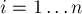
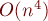

MAXimal
добавлено: 16 Jan 2009 0:58
редактировано: 26 Apr 2011 16:58
Содержание [скрыть]
Диаграмма Вороного в 2D
Определение
Даны  точек на плоскости. Рассмотрим разбиение плоскости на областей (называемых многоугольниками Вороного или ячейками Вороного, иногда — многоугольниками близости, ячейками Дирихле, разбиением Тиссена), где — множество всех точек плоскости, которые находятся ближе к точке , чем ко всем остальным точкам
точек на плоскости. Рассмотрим разбиение плоскости на областей (называемых многоугольниками Вороного или ячейками Вороного, иногда — многоугольниками близости, ячейками Дирихле, разбиением Тиссена), где — множество всех точек плоскости, которые находятся ближе к точке , чем ко всем остальным точкам  :
:
Само разбиение плоскости называется диаграммой Вороного данного набора точек .
Здесь — заданная метрика, обычно это стандартная Евклидова метрика: , однако ниже будет рассмотрен и случай так называемой манхэттенской метрики. Здесь и далее, если не оговорено иного, будет рассматриваться случай Евклидовой метрики
Ячейки Вороного представляют собой выпуклые многоугольники, некоторые являются бесконечными. Точки, принадлежащие согласно определению сразу нескольким ячейкам Вороного, обычно так и относят сразу к нескольким ячейкам (в случае Евклидовой метрики множество таких точек имеет меру нуль; в случае манхэттенской метрики всё несколько сложнее).
Такие многоугольники впервые были глубоко изучены русским математиком Вороным (1868-1908 гг.).
Свойства
- Диаграмма Вороного является планарным графом, поэтому она имеет
 вершин и рёбер.
вершин и рёбер. - Зафиксируем любое . Тогда для каждого проведём прямую — серединный перпендикуляр отрезка ; рассмотрим ту полуплоскость, образуемую этой прямой, в которой лежит точка . Тогда пересечение всех полуплоскостей для каждого
 даст ячейку Вороного .
даст ячейку Вороного . - Каждая вершина диаграммы Вороного является центром окружности, проведённой через какие-либо три точки множества
 . Эти окружности существенно используются во многих доказательствах, связанных с диаграммами Вороного.
. Эти окружности существенно используются во многих доказательствах, связанных с диаграммами Вороного. - Ячейка Вороного является бесконечной тогда и только тогда, когда точка лежит на границе выпуклой оболочки множества .
- Рассмотрим граф, двойственный к диаграмме Вороного, т.е. в этом графе вершинами будут точки , а ребро проводится между точками и , если их ячейки Вороного и имеют общее ребро. Тогда, при условии, что никакие четыре точки не лежат на одной окружности, двойственный к диаграмме Вороного граф является триангуляцией Делоне (обладающей множеством интересных свойств).
Применение
Диаграмма Вороного представляет собой компактную структуру данных, хранящую всю необходимую информацию для решения множества задач о близости.
В рассмотренных ниже задачах время, необходимое на построение самой диаграммы Вороного, в асимптотиках не учитывается.
- Нахождение ближайшей точки для каждой.
Отметим простой факт: если для точки ближайшей является точка , то эта точка имеет "своё" ребро в ячейке . Отсюда следует, что, чтобы найти для каждой точки ближайшую к ней, достаточно просмотреть рёбра её ячейки Вороного. Однако каждое ребро принадлежит ровно двум ячейкам, поэтому будет просмотрено ровно два раза, и вследствие линейности числа рёбер мы получаем решение данной задачи за
. - Нахождение выпуклой оболочки.
Вспомним, что вершина принадлежит выпуклой оболочке тогда и только тогда, когда её ячейка Вороного бесконечна. Тогда найдём в диаграмме Вороного любое бесконечное ребро, и начнём двигаться в каком-либо фиксированном направлении (например, против часовой стрелки) по ячейке, содержащей это ребро, пока не дойдём до следующего бесконечного ребра. Тогда перейдём через это ребро в соседнюю ячейку и продолжим обход. В результате все просмотренные рёбра (кроме бесконечных) будут являться сторонами искомой выпуклой оболочки. Очевидно, время работы алгоритма -
. - Нахождение Евклидова минимального остовного дерева.
Требуется найти минимальное остовное дерево с вершинами в данных точках
, соединяющее все эти точки. Если применять стандартные методы теории графов, то, т.к. граф в данном случае имеет  рёбер, даже оптимальный алгоритм будет иметь не меньшую асимптотику.
рёбер, даже оптимальный алгоритм будет иметь не меньшую асимптотику.Рассмотрим граф, двойственный диаграмме Вороного, т.е. триангуляцию Делоне. Можно показать, что нахождение Евклидова минимального остова эквивалентно построению остова триангуляции Делоне. Действительно, в алгоритме Прима каждый раз ищется кратчайшее ребро между двумя можествами точек; если мы зафиксируем точку одного множества, то ближайшая к ней точка имеет ребро в ячейке Вороного, поэтому в триангуляции Делоне будет присутствовать ребро к ближайшей точке, что и требовалось доказать.
Триангуляция является планарным графом, т.е. имеет линейное число рёбер, поэтому к ней можно применить алгоритм Крускала и получить алгоритм с временем работы
 .
. - Нахождение наибольшей пустой окружности.
Требуется найти окружность наибольшего радиуса, не содержащую внутри никакую из точек (центр окружности должен лежать внутри выпуклой оболочки точек ). Заметим, что, т.к. функция наибольшего радиуса окружности в данной точке является строго монотонной внутри каждой ячейки Вороного, то она достигает своего максимума в одной из вершин диаграммы Вороного, либо в точке пересечения рёбер диаграммы и выпуклой оболочки (а число таких точек не более чем в два раза больше числа рёбер диаграммы). Таким образом, остаётся только перебрать указанные точки и для каждой найти ближайшую, т.е. решение за
.
Простой алгоритм построения диаграммы Вороного за 
Диаграммы Вороного — достаточно хорошо изученный объект, и для них получено множество различных алгоритмов, работающих за оптимальную асимптотику  , а некоторые из этих алгоритмов даже работают в среднем за
, а некоторые из этих алгоритмов даже работают в среднем за  . Однако все эти алгоритмы весьма сложны.
. Однако все эти алгоритмы весьма сложны.
Рассмотрим здесь самый простой алгоритм, основанный на приведённом выше свойстве, что каждая ячейка Вороного представляет собой пересечение полуплоскостей. Зафиксируем  . Проведём между точкой и каждой точкой прямую — серединный перпендикуляр, затем пересечём попарно все полученные прямые — получим точек, и каждую проверим на принадлежность всем полуплоскостям. В результате за
. Проведём между точкой и каждой точкой прямую — серединный перпендикуляр, затем пересечём попарно все полученные прямые — получим точек, и каждую проверим на принадлежность всем полуплоскостям. В результате за  действий мы получим все вершины ячейки Вороного (их уже будет не более , поэтому мы можем без ухудшения асимптотики отсортировать их по полярному углу), а всего на построение диаграммы Вороного потребуется
действий мы получим все вершины ячейки Вороного (их уже будет не более , поэтому мы можем без ухудшения асимптотики отсортировать их по полярному углу), а всего на построение диаграммы Вороного потребуется  действий.
действий.
Случай особой метрики
Рассмотрим следующую метрику:
Начать рассмотрение следует с разбора простейшего случая — случая двух точек  и
и  .
.
Если или , то диаграммой Вороного для них будет соответственно вертикальная или горизонтальная прямая.
Иначе диаграмма Вороного будет иметь вид "уголка": отрезок под углом градусов в прямоугольнике, образованном точками и , и горизонтальные/вертикальные лучи из его концов в зависимости от того, длиннее ли вертикальная сторона прямоугольника или горизонтальная.
Особый случай — когда этот прямоугольник имеет одинаковую длину и ширину, т.е. . В этом случае будут иметься две бесконечные области ("уголки", образованные двумя лучами, параллельными осям), которые по определению должны принадлежать сразу обеим ячейкам. В таком случае дополнительно определяют в условии, как следует понимать эти области (иногда искусственно вводят правило, по которому каждый уголок относят к своей ячейке).
Таким образом, уже для двух точек диаграмма Вороного в данной метрике представляет собой нетривиальный объект, а в случае большего числа точек эти фигуры надо будет уметь быстро пересекать.